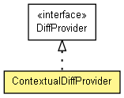

org.apache.wiki.diff
Class ContextualDiffProvider
java.lang.Object
 org.apache.wiki.diff.ContextualDiffProvider
org.apache.wiki.diff.ContextualDiffProvider
- All Implemented Interfaces:
- DiffProvider, WikiProvider
public class ContextualDiffProvider
- extends Object
- implements DiffProvider

A seriously better diff provider, which highlights changes word-by-word using
CSS.
Suggested by John Volkar.
| Methods inherited from class java.lang.Object |
clone, equals, finalize, getClass, hashCode, notify, notifyAll, toString, wait, wait, wait |
PROP_UNCHANGED_CONTEXT_LIMIT
public static final String PROP_UNCHANGED_CONTEXT_LIMIT
- A jspwiki.properties value to define how many characters are shown around the change context.
The current value is "jspwiki.contextualDiffProvider.unchangedContextLimit".
- See Also:
- Constant Field Values
m_emitChangeNextPreviousHyperlinks
public boolean m_emitChangeNextPreviousHyperlinks
m_changeStartHtml
public String m_changeStartHtml
m_changeEndHtml
public String m_changeEndHtml
m_diffStart
public String m_diffStart
m_diffEnd
public String m_diffEnd
m_insertionStartHtml
public String m_insertionStartHtml
m_insertionEndHtml
public String m_insertionEndHtml
m_deletionStartHtml
public String m_deletionStartHtml
m_deletionEndHtml
public String m_deletionEndHtml
m_elidedHeadIndicatorHtml
public String m_elidedHeadIndicatorHtml
m_elidedTailIndicatorHtml
public String m_elidedTailIndicatorHtml
m_lineBreakHtml
public String m_lineBreakHtml
m_alternatingSpaceHtml
public String m_alternatingSpaceHtml
ContextualDiffProvider
public ContextualDiffProvider()
- Constructs this provider.
getProviderInfo
public String getProviderInfo()
- Description copied from interface:
WikiProvider
- Return a valid HTML string for information. May
be anything.
- Specified by:
getProviderInfo in interface WikiProvider
- Returns:
- A string describing the provider.
- See Also:
{@inheritDoc}
initialize
public void initialize(WikiEngine engine,
Properties properties)
throws NoRequiredPropertyException,
IOException
- Description copied from interface:
WikiProvider
- Initializes the page provider.
- Specified by:
initialize in interface WikiProvider
- Parameters:
engine - WikiEngine to own this providerproperties - A set of properties used to initialize this provider
- Throws:
NoRequiredPropertyException - If the provider needs a property which is not found in the property set
IOException - If there is an IO problem- See Also:
{@inheritDoc}
makeDiffHtml
public String makeDiffHtml(WikiContext ctx,
String wikiOld,
String wikiNew)
- Do a colored diff of the two regions. This. is. serious. fun. ;-)
- Specified by:
makeDiffHtml in interface DiffProvider
- Parameters:
ctx - The Wiki ContextwikiOld - the old textwikiNew - the new text
- Returns:
- An XHTML diff.
- See Also:
{@inheritDoc}
Copyright © {inceptionYear}-2014 The Apache Software Foundation. All rights reserved.